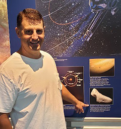
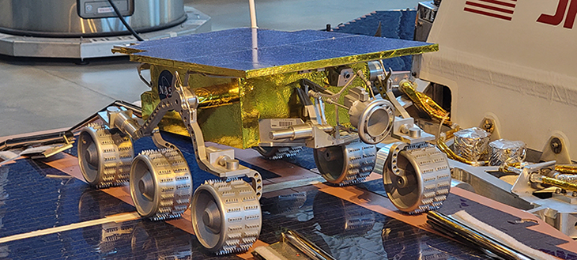

Product Ideation & Design Virtual Prototying
Today, my primary use of 3D visualization has been to explore ideas, communicate concepts, and create rapid virtual prototypes. This efficient design approach allows for low-cost exploratory development to occur, and provides a means of obtaining participatory product feedback from stakeholders during proof-of-concept research studies. Requirements for hardware designs can be vetted and tested before costly physical models are produced.
Mobile Butane Charger & Carry Case Concept
Modeled in Maya.


Next-Generation Verizon Router
Customizable Panel Concept
Modeled in Maya.
This model was created as an exploratory study to provide a means for customers to personalize their Verizon home router. Research indicated that customer premises equipment although necessary, was not particularly visually appealing in the home. As Verizon set out to rebuild a next generation broadband home router, my concept was to allow for customized covers to be used to disquise the hardware. Devices would Accessory panels could be purchased that easily snapped on as a cover. A brushed nickel cover would be provided initially and and other panel finishes could be ordered with an option to have customer provided art printed on a customized cover.
Motorola Droid
Modeled in Maya.
This device model I created was use in various concept design explorations including: Accessories, connected-car, phone as a personalized FiOS TV remote, and other pervasive mobile technology concepts I investigated at Verizon.
3D Visualization
My recent engagements have not required as much 3D visualization and simulation; However, my early career included a lot of this work which was cutting-edge at the time. All of the work below was created on Silicon Graphics and Intergraph workstations and dates back to the late 90's. Softimage, Alias|Wavefront, and Maya were used to build, animate, and render these 100% computer generated imagery (CGI) scenes in NTSC standard definition format. Compositing was done in Discreet Combustion, Smoke, and Adobe After Effects. This area of graphics and design is a deep personal passion of mine.

Interstellar Probe Mission Visualization
Modeled & Animated in Maya.


NASA NEAR Shoemaker Spacecraft Eros Orbit Insertion Telemetry Driven Visualization
Modeled & Animated in Maya.
Credit to JHU/APL colleague Steven P. Gribben for NEAR spacecraft model.
The image taken of Eros during the mission is on display is on display at the Smithsonian National Air and Space Museum Steven F. Udvar-Hazy Center in Chantilly, Virginia. I was lucky enough to stumble across this during my travels. A physical model of the NEAR Shoemaker spacecraft hangs on display in the National Air and Space Museum in Washington, DC.

Mars Rover with Spectral Imager Concept
Modeled & Animated in Maya.
The conceptual instrument visualization was performed during R&D of the NASA Mars Rover project. A representation of the actual fielded product is on display at the Smithsonian National Air and Space Museum Steven F. Udvar-Hazy Center in Chantilly, Virginia. I was lucky enough to stumble across this during my travels.
MALD UAV Concept
Modeled & Animated in Maya with set-driven-keys and MEL scripting for missile payload launch simulation based on a particle system.
E-2C Hawkeye
Modeled & Animated in Maya with MEL scripting for propeller animation and particle system contrail simulation.
F/A-18E Patrol
Modeled & Animated in Maya.
F/A-18E Evening Flight
Modeled & Animated in Maya.
Over-the-Horizon Cooperative Engagement Capability Concept
Modeled & Animated in Maya. MEL scripting for radar movement,threat asset movement and tracking. Particle system implemented for shoreline surf collision simulation.
USMC HAWK Missile Launch
Modeled & Animated in Maya. Particle system for missle exhaust simulation.
Aegis Cruiser Evening Patrol
Modeled & Animated in Maya. MEL scripting for radar movement and particle system collision detection for bow and stern wash simulation.
Aegis Cruiser Flyby with SM-3 Launch
Modeled & Animated in Maya. Particle system for missle exhaust, and bow and stern wash.
USS Los Angeles SSN-688 Fast Attack Submarine
Modeled & Animated in Maya.
SSBN Fleet Ballistic Missile Submarine
Modeled & Animated in Maya.
Safe Flight Concept for FAA
Modeled & Animated in Maya. MEL scripting and partical sytem environmental effects.
Data-Driven Simulation
Similar in context to the visualization examples, the primary difference for this work is the output was created to accurately represent an actual data set. The goal was to remove all aspects of artistic license and ensure a hi-fidelity of technical acccuracy was present. The process of using data to create these representations was as important as the final output itself.
SM-3 LaDAR Simulation
The data visualization was performed during R&D of the SM-3 project. A representation of the actual fielded product is on display at the Smithsonian National Air and Space Museum Steven F. Udvar-Hazy Center in Chantilly, Virginia. I was lucky enough to stumble across this during my travels. Some projects are actually "Rocket Science!"
M.S. Project/Thesis - Modal affectivity on users of 3D environmental simulation and visualization
Modeled and Simulated with Maya and Shockwave.
The final project/thesis work for my M.S. In Interaction Design and Information Architecure surrounded visualization of complex data sets. I choose a complete set of architectural blueprints as my data source and presented the information through a variety of modalities. This clip hilights a linear virtual 3D walk-thru of a scale finshed model of how the building would appear when built to plan.
New Building Integration & Lab Exhaust Study
Created in Maya.
This geo-spatial simulation represented the integration of two proposed buildings into the JHU/APL campus. All aspects of the simulation are to scale and the terrain model is accurate to one foot and based on topographic mapping and architectural plans.
Logo Animation
Blurb about logos
Groovement Band Logo
Some work is just just for fun! This animated logo was produced for a friends band.

Technical Communications Group Logo
Modeled and animated in Maya.
Created for group branding in multimedia presentations and video productions.
Post-Production Composites
Sequences below are examples of from video production transitions.
NASA NEAR Shoemaker Live Broadcast Loop
Created in Maya and Discreet Combustion.
Lower Third with Background
Transition to Full-frame Talking Head
Created in Discreet Combustion.
Transition to Full-frame Animation
Animated in Discreet Combustion.
Credit to JHU/APL colleague
Steven P. Gribben
for TIMED spacecraft animation.
Warfighter Information Fusion Production Composites
Modeled & Animated in Maya. Composite and post-production effects in Discreet Combustion.
Production Transition Composites
Created in Discreet Combustion.

Production Title Composite and Crawl Group Example
Created in Discreet Combustion.

{kind=link}
{kind=link}
{kind=link}